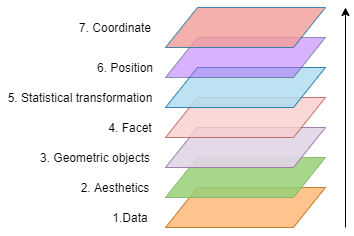

5. Ngữ pháp của biểu đồ với plotnine
5.1. Giới thiệu
Trong lĩnh vực phân tích dữ liệu, bên cạnh việc biến đổi dữ liệu, kỹ năng trực quan hóa biểu đồ là kỹ năng đặc biệt quan trọng, giúp cho người đọc báo cáo, phân tích nắm được kết quả phân tích một cách đơn giản hơn.
Với python, việc trực quan hóa thường được sử dụng với matplotlib hoặc searborn. Tuy nhiên, trong lĩnh vực trực quan hóa dữ liệu, tư tưởng mang tính đột phá là tư duy ngữ pháp biểu đồ và được phổ biến rộng rãi qua ngôn ngữ R. Với python, ta có thể sử dụng package plotnine.
!pip install plotnine
Các thư viện khác như matplotlib hoặc searborn sẽ được trình bày trong các chương tiếp theo
Khái niệm "ngữ pháp của biểu đồ" cho rằng: Mỗi biểu đồ được tạo ra do 2 hay nhiều lớp chống lấn mà thành. Các lớp của biểu đồ bao gồm
Các lớp (layer) cơ bản (bắt buộc phải có):
Dữ liệu (data): Tập số liệu được sử dụng cho việc xây dựng biểu đồ.
Biến (aesthetic attribute): Xác định các biến trong dữ liệu được sắp xếp như thế nào. VD: trục tung, trục hoành là biến nào? Màu sắc được sắp xếp theo biến nào? Độ lớn của mỗi điểm được xác định theo biến nào?
Tính chất hình học của biểu đồ (geometric object): xác định loại biểu đồ được sử dụng. VD: biểu đồ cột, biểu đồ điểm (scatter plot), biểu đồ dây (line chart)
Các lớp (layer) nâng cao (không bắt buộc):
Facet (tạm dịch: cách thức sắp xếp số liệu trên cùng 1 biểu đồ): Xác định cách thức sắp xếp vị trí của nhiều biểu đồ trên cùng một màn hình.
Tính toán thống kê (statistical transformation): Sử dụng các tính toán trong biểu đồ. VD: Thêm các biểu đồ xu hướng dạng trơ (geom_smooth) , số lượng bin trong histogram… Lớp này có thể nằm lồng trong ngay trong nhóm
aestheticsVị trí (position): Xác định vị trí trong biểu đồ
Trục tọa độ (Coordinate): Xác định hệ trục tọa độ vẽ biểu đồ. VD: Hệ tọa độ 3 trục trong không gian (hệ tọa đồ Descartes), hệ tọa độ cực
Các lớp trong biểu đồ có thể thể hiện thành các lớp như sau
Việc hiểu và nắm vững nguyên lý của
ggplot2sẽ cho phép chúng ta xây dựng gần như bất kỳ biểu đồ nào.
5.2. Xây dựng biểu đồ
5.2.1. Biểu đồ cơ bản
Câu lệnh cơ bản của ggplot như sau:
ggplot(data = <DATA>) +
<GEOM_FUNCTION>(mapping = aes(<MAPPINGS>))
[1]:
import pandas as pd
# Sử dụng data mpg
from plotnine.data import mpg
# Sử dụng tất cả các hàm trong plotnine
from plotnine import *
[2]:
mpg.head()
[2]:
| manufacturer | model | displ | year | cyl | trans | drv | cty | hwy | fl | class | |
|---|---|---|---|---|---|---|---|---|---|---|---|
| 0 | audi | a4 | 1.8 | 1999 | 4 | auto(l5) | f | 18 | 29 | p | compact |
| 1 | audi | a4 | 1.8 | 1999 | 4 | manual(m5) | f | 21 | 29 | p | compact |
| 2 | audi | a4 | 2.0 | 2008 | 4 | manual(m6) | f | 20 | 31 | p | compact |
| 3 | audi | a4 | 2.0 | 2008 | 4 | auto(av) | f | 21 | 30 | p | compact |
| 4 | audi | a4 | 2.8 | 1999 | 6 | auto(l5) | f | 16 | 26 | p | compact |
[3]:
# Set theme minimal
import plotnine as pln
pln.theme_set(theme_minimal)
[4]:
ggplot(data = mpg) + \
geom_point(mapping = aes(x = "displ", # Trục x là displ
y = "hwy", # Trục y là hwy
color = "class")) # Color là class
[4]:
<Figure Size: (640 x 480)>
Trong ví dụ trên, ta đã vẽ biểu đồ điểm (geom_point) với tập dữ liệu mpg để phân tích quan hệ giữa hai biến displ và hwy và phân nhóm màu theo class.
Ta có thể vẽ biểu đồ với kích thước của từng điểm theo cyl như sau.
[5]:
ggplot(data = mpg) + \
geom_point(mapping = aes(x = "displ", # Trục x là displ
y = "hwy", # Trục y là hwy
size = "cyl"), # Kích thước theo cyl
color = "darkblue") # Tất cả các điểm có màu là blue
[5]:
<Figure Size: (640 x 480)>
5.2.2. Facet
Facet cho phép chúng ta chia dữ liệu thành nhiều phần theo từng nhóm và xây dựng biểu đồ cho mỗi nhóm trong đó. Câu lệnh của facet như sau
facet_wrap( group_variable, # Chia nhóm
nrow = 2, # Số lượng dòng trong biểu đồ
scale = "free") # "free" cho phép biểu đồ auto scale
[6]:
ggplot(data = mpg) + \
geom_point(mapping = aes(x = "displ",
y = "hwy"),
color = "darkblue",
alpha = 0.2) +\
facet_wrap("class") + \
labs(title = "Facet wrap")
[6]:
<Figure Size: (640 x 480)>
Lưu ý: Ta có thể viết cách khác như sau
[7]:
(
ggplot(data = mpg)
+ geom_point(mapping = aes(x = "displ",
y = "hwy"),
color = "darkgreen",
alpha = 0.2)
+ facet_wrap("class",
nrow = 2)
+ labs(title = "Facet wrap")
)
[7]:
<Figure Size: (640 x 480)>
5.2.3. Thuộc tính hình học - geom
Các loại biểu đồ khác nhau trong plotnine chỉ khác nhau ở geom_ - thuộc tính hình học của biểu đồ. Mỗi geom sẽ có các tham số khác nhau cần được điều chỉnh.
Trong ví dụ dưới đây, ta vẽ 2 loại biểu đồ chồng lên nhau gồm 1. biểu đồ điểm và 2. biểu đồ thể hiện xu hướng
[8]:
ggplot(mpg,
mapping = aes("displ", "hwy")) +\
geom_point(color = "darkblue", alpha = 0.4, size = 4) +\
geom_smooth(color = "darkred")
c:\Users\Hoang Duc Anh\AppData\Local\Programs\Python\Python311\Lib\site-packages\plotnine\stats\smoothers.py:330: PlotnineWarning: Confidence intervals are not yet implemented for lowess smoothings.
[8]:
<Figure Size: (640 x 480)>
Lưu ý: Khi có nhiều geom_object, nếu không có sự điều chỉnh khi mapping của từng geom, các lớp sau sẽ lấy các biến global để làm thuộc tính. Trong ví dụ trên, hai lớp geom_point và geom_smooth lấy giá trị mặc định là aes(displ, hwy)
[9]:
ggplot(mpg, mapping = aes("displ", "hwy")) +\
geom_point(aes(color = "drv"), alpha = 0.4) +\
geom_smooth(aes(color = "drv"),
size = 1.2)
c:\Users\Hoang Duc Anh\AppData\Local\Programs\Python\Python311\Lib\site-packages\plotnine\stats\smoothers.py:330: PlotnineWarning: Confidence intervals are not yet implemented for lowess smoothings.
c:\Users\Hoang Duc Anh\AppData\Local\Programs\Python\Python311\Lib\site-packages\plotnine\stats\smoothers.py:330: PlotnineWarning: Confidence intervals are not yet implemented for lowess smoothings.
c:\Users\Hoang Duc Anh\AppData\Local\Programs\Python\Python311\Lib\site-packages\plotnine\stats\smoothers.py:330: PlotnineWarning: Confidence intervals are not yet implemented for lowess smoothings.
[9]:
<Figure Size: (640 x 480)>
Trong plotnine có rất nhiều geom phục vụ các loại biểu đồ khác nhau. Tuy nhiên, để phục vụ công viên thực tế, trong ggplot2 cần nắm vững các loại geom quan trọng nhất như sau.
geom_point: Biểu đồ điểmgeom_line: Biểu đồ đườnggeom_boxplot: Biểu đồ boxplotgeom_col,geom_bar: Biểu đồ cộtgeom_smooth: Biểu đồ vẽ xu hướnggeom_histogram,geom_density: Biểu đồ phân phối
[10]:
# geom_boxplot
ggplot(mpg, aes("class", "hwy")) +\
geom_boxplot(fill = "darkblue", alpha = 0.5)
[10]:
<Figure Size: (640 x 480)>
[11]:
# geom_col
ggplot(mpg, aes("class")) +\
geom_bar(aes(fill = "drv"))
[11]:
<Figure Size: (640 x 480)>
[12]:
# geom_density
ggplot(mpg, aes("hwy")) +\
geom_density(fill = "darkblue", alpha = 0.2)
[12]:
<Figure Size: (640 x 480)>
[13]:
# geom_histogram
ggplot(mpg, aes("hwy")) +\
geom_histogram(fill = "darkgreen", alpha = 0.4)
c:\Users\Hoang Duc Anh\AppData\Local\Programs\Python\Python311\Lib\site-packages\plotnine\stats\stat_bin.py:109: PlotnineWarning: 'stat_bin()' using 'bins = 11'. Pick better value with 'binwidth'.
[13]:
<Figure Size: (640 x 480)>
5.2.4. Tính toán thống kê - statistical transformations
Đối với lớp tính toán thống kê (statistical transformation), biểu đồ không được vẽ trực tiếp với 2 trục tung và trục hoành mà sẽ phải trải qua bước tính toán thống kê trước.
Xem ví dụ biểu đồ cột dưới đây.
[14]:
from plotnine.data import diamonds
ggplot(diamonds) +\
geom_bar(mapping = aes(x = "cut"))
[14]:
<Figure Size: (640 x 480)>
Ở ví dụ này, trục x là các nhóm của cut trong khi trục y là số lượng quan sát ở mỗi nhóm, giá trị này không phải là biến trực tiếp từ dữ liệu mà là 1 biến phái sinh. Quá trình xây dựng biểu đồ được thực hiện qua 3 bước như sau.

Ta cũng có thể thay đổi lớp biến đổi dữ liệu trong biểu đồ trên để hiển thị dạng tổng của 1 biến bất kỳ như sau.
[15]:
ggplot(diamonds) +\
geom_bar(mapping = aes(x = "cut", y = "carat"), stat = "identity", group = 1)
[15]:
<Figure Size: (640 x 480)>
5.2.5. Vị trí trong biểu đồ
Quay lại ví dụ bar chart phía trên, khi xây dựng biểu đồ có 2 hoặc nhiều nhóm, biểu đồ có thể có 3 kiểu vị trí như sau:
position = "identity"(default): Giữ nguyên chế độ mặc định, để dạng stack bar với giá trị trục y mặc địnhposition = "fill": Tương tự "identity" nhưng mỗi cột sẽ có tỷ trọng bằng nhauposition = "dodge": Phân nhóm biểu đồ
Xem ví dụ dưới đây.
[16]:
# position = "identity"
ggplot(diamonds) +\
geom_bar(mapping = aes(x = "cut", fill = "clarity"))
[16]:
<Figure Size: (640 x 480)>
[17]:
# position = "fill"
ggplot(diamonds) +\
geom_bar(mapping = aes(x = "cut", fill = "clarity"),
position = "fill")
[17]:
<Figure Size: (640 x 480)>
[18]:
# position = "dodge"
ggplot(diamonds) +\
geom_bar(mapping = aes(x = "cut", fill = "clarity"),
position = "dodge")
[18]:
<Figure Size: (640 x 480)>
Bên cạnh 3 nhóm position trên, biểu đồ điểm còn có nhóm riêng là postion = "jitter". Option này cho phép thay đổi giá trị của mỗi điểm một lượng nhỏ để biểu đồ điểm không bị trùng lặp nhiều quan sát (khi nhiều quan sát có chung một giá trị). Nhóm này có thể sử dụng tương đương với geom_jitter.
[19]:
ggplot(data = mpg) +\
geom_point(mapping = aes(x = "displ", y = "hwy")) +\
labs(title = "Without position jitter")
[19]:
<Figure Size: (640 x 480)>
[20]:
ggplot(data = mpg) + \
geom_point(mapping = aes(x = "displ", y = "hwy"),
position = "jitter") + \
labs(title = "Position jitter")
[20]:
<Figure Size: (640 x 480)>
§
Đối với biểu đồ miền (area chart), ta có thể sử dụng option position = "fill" để thể hiện dạng phần trăm.
[21]:
import pandas as pd
import numpy as np
# Tạo dữ liệu giả lập
year = np.arange(1875, 1973)
group = ["A", "B", "C"]
df = np.array(np.meshgrid(year, group)).\
reshape(2, len(year) * len(group))
# Convert sang data frame
df = pd.DataFrame({
'year' : df[0],
'group' : df[1]
})
# Tạo biến level
df['level'] = np.random.normal(50, 10, df.shape[0])
# Chỉnh sửa category
df['year'] = df['year'].astype('float')
df['group'] = df['group'].astype('category')
df.head()
[21]:
| year | group | level | |
|---|---|---|---|
| 0 | 1875.0 | A | 47.532653 |
| 1 | 1876.0 | A | 38.900201 |
| 2 | 1877.0 | A | 61.386196 |
| 3 | 1878.0 | A | 52.910796 |
| 4 | 1879.0 | A | 40.989734 |
[22]:
# Lấy theo số tuyệt đối
ggplot(df, aes("year", "level")) +\
geom_area(aes(fill = "group"))
[22]:
<Figure Size: (640 x 480)>
[23]:
# Lấy theo tỷ lệ
ggplot(df, aes("year", "level")) +\
geom_area(aes(fill = "group"),
position = position_fill()) +\
labs(title = "Position fill")
[23]:
<Figure Size: (640 x 480)>
5.2.6. Hệ trục tọa độ
Biểu đồ thông thường được xây trên hệ trục tọa độ Đề-các với tỷ lệ 1-1. Bên cạnh hệ trục này, ggplot2 hỗ trợ các hệ trục tọa độ khác nhưng thông dụng nhất là coord_flip, cho phép đổi vị trí hai trục tọa độ cho nhau
[24]:
ggplot(mpg, aes("factor(cyl)", "hwy")) +\
geom_boxplot(aes(fill = "cyl")) +\
coord_flip()
[24]:
<Figure Size: (640 x 480)>
5.2.7. Các yếu tố khác
Bên cạnh các lớp biểu đồ đã phân tích trên, khi xây dựng biểu đồ với, còn 2 nhóm câu lệnh thường sử dụng:
labs: Đặt tên bản đồ, chú giải, tên các trụctheme: Sử dụng để có bản đồ đẹp và phù hợp hơn
5.2.7.1. Labs
Để điều chỉnh tên biểu đồ, chú giải, ta có thể sử dụng câu lệnh labs
labs(title = "title",
subtitle = "subtitle",
x = "Trục x",
y = "Trục y",
caption = "Footnote")
[25]:
ggplot(mpg, aes("displ", "hwy")) +\
geom_point(color = "darkblue", alpha = 0.4, position = "jitter", size = 4) +\
labs(title = "Highway miles per gallon by Engine displacement",
subtitle = "From mpg data set",
x = "Engine displacement",
y = "Highway miles per gallon",
caption = "Source: data science team")
[25]:
<Figure Size: (640 x 480)>
5.2.7.2. Theme
Khi xây dựng biểu đồ với ggplot2, ta có thể sử dụng rất nhiều theme có sẵn nhưng được dùng nhiều nhất là theme_bw(), theme_classic(), theme_minimal()
[26]:
p = ggplot(mpg, aes("displ", "hwy")) +\
geom_point(fill = "darkblue", alpha = 0.4, size = 3)
p + labs(title = "Default theme")
[26]:
<Figure Size: (640 x 480)>
[27]:
p + labs(title = "Theme black & white") + theme_bw()
[27]:
<Figure Size: (640 x 480)>
[28]:
p + labs(title = "Theme classic") + theme_classic()
[28]:
<Figure Size: (640 x 480)>
[29]:
p + theme_minimal() + labs(title = "Theme minimal")
[29]:
<Figure Size: (640 x 480)>
Để tùy chỉnh các thành phần có sẵn trong biểu đồ, ta có thể sử dụng hàm theme để customize từng thành phần như sau.
[30]:
p + theme(
# Tên title
axis_title = element_text(family = "serif", face = "bold", fontsize = 16),
# Tên của trục x và y
axis_title_x = element_text(family = "serif", face = "bold"),
axis_title_y = element_text(family = "serif", face = "bold"),
# Chữ trên trục
axis_text = element_text(face = "italic"),
# Xóa phần nền trong panel
panel_background = element_blank()
)
[30]:
<Figure Size: (640 x 480)>
Để xem các yếu tố có thể tùy chỉnh trong theme, ta có thể sử dụng câu lệnh plotnine.theme??
5.2.8. Thay đổi màu trong biểu đồ
Hệ mã màu trong plotnine được chia làm 2 nhóm chính:
color: Với các nhóm biểu đồ điểm, đường (point,line)fill: Với các biểu đồ như biểu đồ cột, miền, boxplot
Bên cạnh đó, dải màu cũng được chia làm 2 nhóm
Biến liên tục
Biến rời rạc
Với biến màu rời rạc
[31]:
# Điều chỉnh màu thủ công
p = ggplot(mpg, aes("class", "hwy")) +\
geom_boxplot(aes(fill = "class")) +\
coord_flip()
p
[31]:
<Figure Size: (640 x 480)>
[32]:
p + scale_fill_brewer(palette=1)
[32]:
<Figure Size: (640 x 480)>
5.3. Các mẹo với plotnine
5.3.1. Đặt global option cho theme
Khi bắt đầu project, ta có thể đặt một theme để sử dụng với tất cả biểu đồ với hàm theme_set.
[33]:
# Set theme
theme_set(theme_bw() +\
theme(legend_position = "top"))
ggplot(mpg, aes("displ", "hwy")) +\
geom_point(aes(color = "cyl"), alpha = 0.4, size = 5)
[33]:
<Figure Size: (640 x 480)>
5.3.2. Loại bỏ legend trong 1 lớp
[34]:
theme_set(theme_minimal())
# Để cả 2 legend
ggplot(mpg, aes("displ", "hwy")) +\
geom_point(aes(color = "class"), alpha = 0.4, size = 5) +\
geom_smooth(aes(color = "class")) +\
labs(title = "Legend in 2 layers")
c:\Users\Hoang Duc Anh\AppData\Local\Programs\Python\Python311\Lib\site-packages\plotnine\stats\smoothers.py:330: PlotnineWarning: Confidence intervals are not yet implemented for lowess smoothings.
c:\Users\Hoang Duc Anh\AppData\Local\Programs\Python\Python311\Lib\site-packages\plotnine\stats\smoothers.py:330: PlotnineWarning: Confidence intervals are not yet implemented for lowess smoothings.
c:\Users\Hoang Duc Anh\AppData\Local\Programs\Python\Python311\Lib\site-packages\plotnine\stats\smoothers.py:330: PlotnineWarning: Confidence intervals are not yet implemented for lowess smoothings.
c:\Users\Hoang Duc Anh\AppData\Local\Programs\Python\Python311\Lib\site-packages\plotnine\stats\smoothers.py:330: PlotnineWarning: Confidence intervals are not yet implemented for lowess smoothings.
c:\Users\Hoang Duc Anh\AppData\Local\Programs\Python\Python311\Lib\site-packages\plotnine\stats\smoothers.py:330: PlotnineWarning: Confidence intervals are not yet implemented for lowess smoothings.
c:\Users\Hoang Duc Anh\AppData\Local\Programs\Python\Python311\Lib\site-packages\plotnine\stats\smoothers.py:330: PlotnineWarning: Confidence intervals are not yet implemented for lowess smoothings.
c:\Users\Hoang Duc Anh\AppData\Local\Programs\Python\Python311\Lib\site-packages\plotnine\stats\smoothers.py:330: PlotnineWarning: Confidence intervals are not yet implemented for lowess smoothings.
[34]:
<Figure Size: (640 x 480)>
[35]:
# Loại bỏ 1 legend
ggplot(mpg, aes("displ", "hwy")) +\
geom_point(aes(color = "class"), alpha = 0.4, size = 5) +\
geom_smooth(aes(color = "class"), show_legend = False) +\
labs(title = "Legend in 1 layer only") +\
theme(legend_position= "top")
c:\Users\Hoang Duc Anh\AppData\Local\Programs\Python\Python311\Lib\site-packages\plotnine\stats\smoothers.py:330: PlotnineWarning: Confidence intervals are not yet implemented for lowess smoothings.
c:\Users\Hoang Duc Anh\AppData\Local\Programs\Python\Python311\Lib\site-packages\plotnine\stats\smoothers.py:330: PlotnineWarning: Confidence intervals are not yet implemented for lowess smoothings.
c:\Users\Hoang Duc Anh\AppData\Local\Programs\Python\Python311\Lib\site-packages\plotnine\stats\smoothers.py:330: PlotnineWarning: Confidence intervals are not yet implemented for lowess smoothings.
c:\Users\Hoang Duc Anh\AppData\Local\Programs\Python\Python311\Lib\site-packages\plotnine\stats\smoothers.py:330: PlotnineWarning: Confidence intervals are not yet implemented for lowess smoothings.
c:\Users\Hoang Duc Anh\AppData\Local\Programs\Python\Python311\Lib\site-packages\plotnine\stats\smoothers.py:330: PlotnineWarning: Confidence intervals are not yet implemented for lowess smoothings.
c:\Users\Hoang Duc Anh\AppData\Local\Programs\Python\Python311\Lib\site-packages\plotnine\stats\smoothers.py:330: PlotnineWarning: Confidence intervals are not yet implemented for lowess smoothings.
c:\Users\Hoang Duc Anh\AppData\Local\Programs\Python\Python311\Lib\site-packages\plotnine\stats\smoothers.py:330: PlotnineWarning: Confidence intervals are not yet implemented for lowess smoothings.
[35]:
<Figure Size: (640 x 480)>
5.3.3. Làm nổi bật biểu đồ với annotate
Trong biểu đồ, để tạo hiệu ứng tốt nhất, ta có thể thêm các vùng highlight để làm nổi bật biểu đồ bằng cách sử dụng annotate.
Hàm annotate tương tự như geom nhưng khác biệt ở chỗ, tham số của annotate được thêm vào dưới dạng vector.
[36]:
ggplot(mpg, aes(x = "displ", y = "hwy")) + \
geom_point(color = "darkblue", alpha = 0.3, size = 3) +\
annotate(xmin = 4, xmax = 7, ymin = 20, ymax = 44,
geom = "rect", fill = "darkred", alpha = 0.2)
[36]:
<Figure Size: (640 x 480)>
5.3.4. Hiển thị text biểu đồ ở giữa bar chart
Sử dụng option
position = position_stack(vjust = 0.5)
[37]:
df = mpg.groupby("class").\
size().\
reset_index(name = "no")
df
C:\Users\Hoang Duc Anh\AppData\Local\Temp\ipykernel_21780\179534537.py:1: FutureWarning: The default of observed=False is deprecated and will be changed to True in a future version of pandas. Pass observed=False to retain current behavior or observed=True to adopt the future default and silence this warning.
[37]:
| class | no | |
|---|---|---|
| 0 | 2seater | 5 |
| 1 | compact | 47 |
| 2 | midsize | 41 |
| 3 | minivan | 11 |
| 4 | pickup | 33 |
| 5 | subcompact | 35 |
| 6 | suv | 62 |
[38]:
ggplot(df, aes("class", "no")) +\
geom_bar(stat = "identity", fill = "darkblue", alpha = 0.6) +\
geom_text(aes(label = "no"), position = position_stack(vjust = 0.5))
[38]:
<Figure Size: (640 x 480)>
5.4. Các package bổ trợ
5.4.1. Kết hợp nhiều biểu đồ với patchworklib
Khi trực quan hóa dữ liệu, ta có thể kết hợp nhiều biểu đồ với nhau để thành 1 biểu đồ duy nhất. Để kết hợp các biểu đồ của ggplotnine, ta có thể sử dụng package patchworklib.
[39]:
import patchworklib as pw
from plotnine.data import mtcars
from plotnine import *
p1 = (ggplot(mtcars, aes("mpg", "cyl")) +\
geom_point(aes(color = "factor(vs)"), size = 4) +\
theme_minimal())
p2 = (ggplot(mtcars, aes("mpg", "disp")) \
+ geom_point(color = "darkblue", alpha = 0.3, size = 2) \
+ geom_smooth(color = "darkred") \
+ theme_minimal())
p3 = (ggplot(mtcars, aes("factor(vs)", "mpg")) \
+ geom_boxplot(aes(fill = "factor(vs)")) \
+ theme_minimal())
[40]:
# Load object plotnine
p1_new = pw.load_ggplot(p1, figsize = (4, 5))
p2_new = pw.load_ggplot(p2, figsize = (2, 2))
p3_new = pw.load_ggplot(p3, figsize = (2, 2))
[41]:
# Kết hợp biểu đồ
p1_new + (p2_new / p3_new)
[41]:
5.4.2. Biểu đồ động với lets-plot
Ta có thể tạo biểu đồ theo dạng plotnine động với lets-plot
[42]:
from lets_plot import *
LetsPlot.setup_html()
[43]:
ggplot(mpg, aes("class", "displ")) +\
geom_boxplot(aes(fill = "class")) +\
coord_flip()
[43]:
Các cú pháp của lets-plot tương tự như plotnine và hỗ trợ rất tốt dạng biểu đồ động. Tuy nhiên, lets-plot chưa hỗ trợ nhiều các option tùy biến. Khi làm việc thực tế, ta có thể sử dụng cả 2 tùy trường hợp